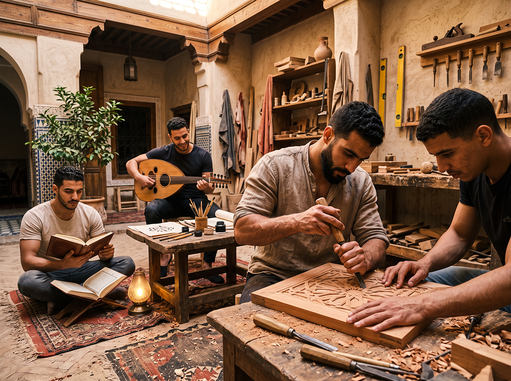

Vie au Riad
La vie du Riad est ordonnée par les cinq prières canoniques. Elles ne sont pas un ornement : elles sont l’ossature du temps.

Le temps n’est pas fragmenté par l’urgence. Il est structuré par la prière, le travail du geste, l’étude et la présence.

Fajr
La prière canonique de l’aube ouvre le jour.
Puis le silence. L’école coranique suit : mémorisation, récitation, posture.

Adab, musique, métiers
Leçons d’adab et de rhétorique. Musique et chant traditionnels. Travail des métiers dans la clarté du matin.

Dhuhr
Prière de midi. Repas simple, partagé, presque silencieux.

Geste et Asr
Ateliers et jardin. Asr marque le tournant du jour.
Le corps et les mains travaillent encore, avant que la lumière baisse.

Maghrib
Prière du coucher du soleil. Repas du soir, retenue.
Sous les lanternes, la maison change de ton. Quelques paroles, beaucoup de présence.

Isha
Dernière prière. Puis le silence de la maison.
Les couloirs s’éteignent. La nuit appartient à ceux qui y vivent.


Les hôtes sélectionnés sont invités à entrer dans ce rythme — non comme spectateurs.